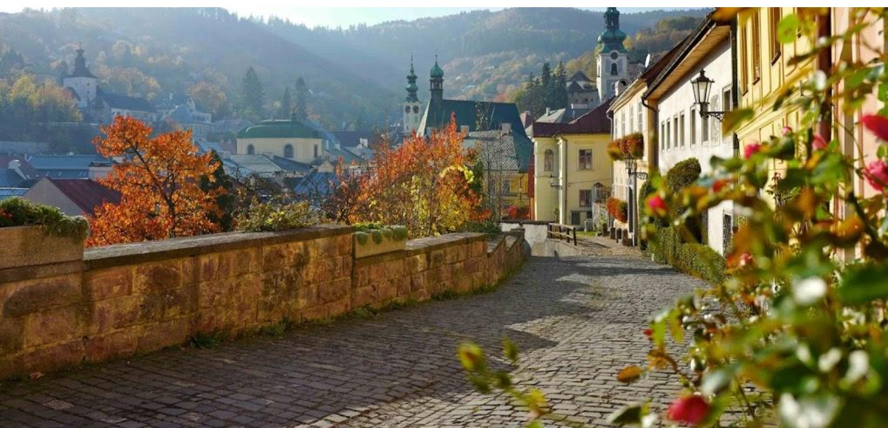

A Dolná ružová ulička Selmecbánya egyik legszebb, legfinomabban díszített kis utcája. Nyáron a házfalakon színes rózsák futnak fel, az ablakokból virágok lógnak, és a szűk utca úgy kanyarog lefelé, mintha egy régi festménybe léptetek volna bele. A lépcsők, a kovácsoltvas korlátok, a színes homlokzatok és a völgyre nyíló panoráma együtt adják meg azt a hangulatot, ami miatt az embernek kedve lenne itt leülni egy padra, és csak nézni a várost.
Ahogy lassan sétáltok az utca elején, néha érdemes megállni, hátranézni, és észrevenni az apró részleteket: a régi kapuk feletti díszeket, a kis erkélyeket, a falakba rejtett évszámokat. Itt már nem csak házak között mentek át, hanem egy régi bányaváros emlékei között: minden repedés, minden ablakkeret úgy néz ki, mintha történetet őrizne.
Most egy olyan házat kell megtalálnotok, amelyen a Luther rózsája látható.
Ha felismeritek ezt rószát, akkor a következő állomás kódját is megtaláljátok. Amikor rátaláltok, ne csak a díszt jegyezzétek meg, hanem a kétjegyú számot is – mert erre lesz szükségetek az igazi kincs kinyitásához.